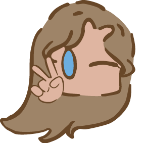
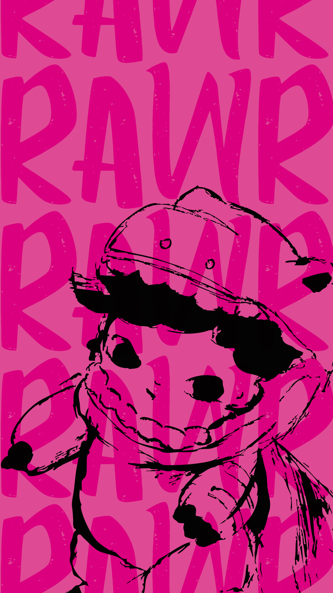
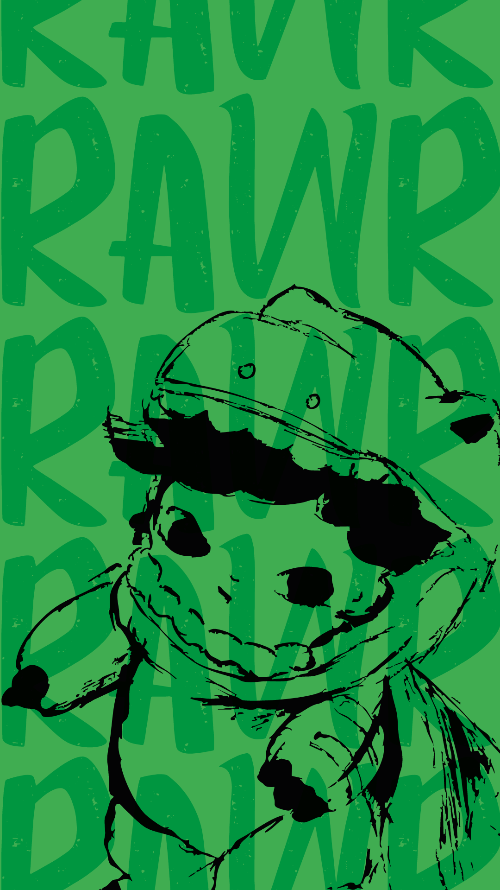
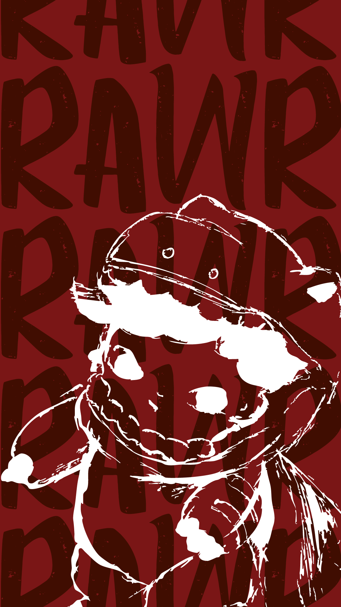
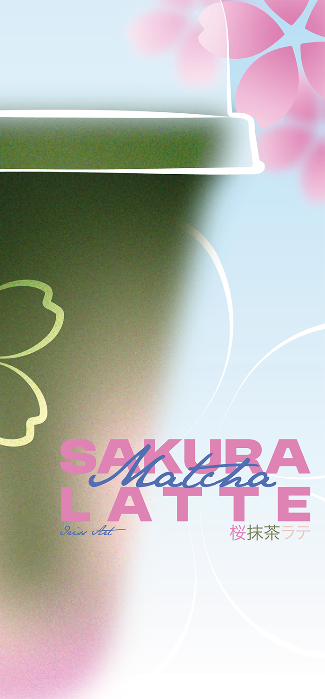
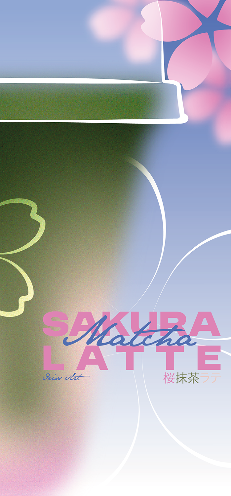
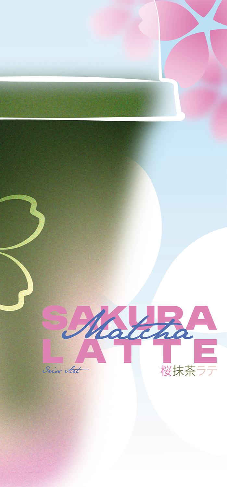
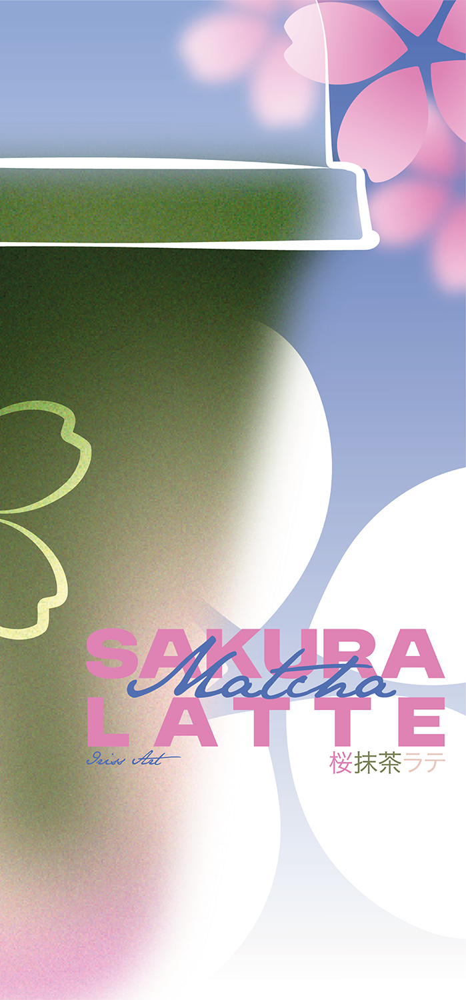

Bonjour ! je suis Lucie ou sous le nom de Iriss Art sur les réseaux sociaux.
Voici mon site avec quelques un de mes travaux. Ici vous trouverez des dessins, des créations graphique, un peu de mon évolution aussi.
J'ai mis une image quelconque, elle a été uploadé sur github.

Je vais vous présenter quelques-un de mes projets ci dessous.
C'est une affiche réaliser en 3 colories, dont le personnage vient d'une figurine de la collections des Dimoo. Elles peuvent aussi s'adapter en fond d'écran.



C'est une affiche réaliser en différent version, avec des différence sur la couleur du fond ou la fleur.




C'est un projet de création d'une affiche pour un événement qui amène les gens a se balades dans toulouse et les alentours pour découvrir les ateliers d'artistes.
Réalisation d'une couverture de livre pour la nouvelle "Casa Tomada" de Julio Cortázar. C'est une création de couverture déclinable pour une collection de plusieurs nouvelle.